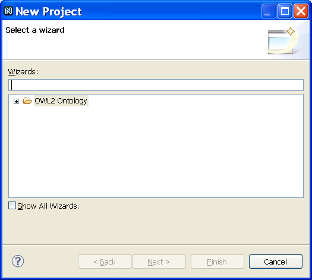

- Create an ontology project.
Select File >> New >> Project. The New Project dialog opens.

- Select Ontology Development Project.
Open the folder Ontology and select Ontology Development Project.
- Click Next.
Enter the name of the project in the text box.
- Click Finish.
The ontology project will be created. To discard your changes, click Cancel.